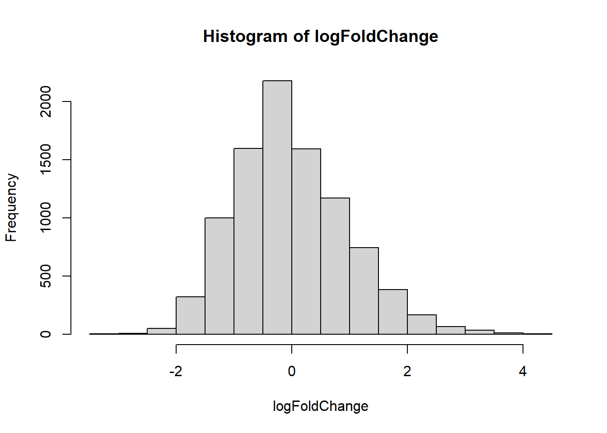

Module 8
The Book of R: Appendix A (packages)
Module 7 review
- External programs
- system2
- Introduction to plots
- plot(runif(50), runif(50)) #x,y scatter plot
- boxplot(runif(50))
Packages
Key R concept
- A place to store a set of functions
- Can create a library of functions
- Easily import the functions (and data) into R by installing the * package
- Packages are available online in package repositories
- The Comprehensive R Archive Network (CRAN) - https://cran.r-project.org/
- Bioconductor - https://www.bioconductor.org/
Installing packages
# This downloads the package to your computer
# Permanent download – you only need to do this once
# select a mirror – choose someplace close (faster internet connection), or just the first one
install.packages("ggplot2")# This loads the package so you can use it
# Need to do this each time you restart R
# Sometimes other packages that this package needs will automatically be downloaded – could take time.
library(ggplot2)## Warning: package 'ggplot2' was built under R version 4.0.5#now we can use the functions in the package
ggplot(iris, aes(x = Sepal.Length, fill = Species)) + geom_density(alpha = .3)Package management
#List all installed packages
installed.packages()
#uninstall a package
#e.g. remove.packages(ggplot2)
#remove.packages(pkgs, lib)
#Lists packages that could be updated
old.packages()
#Update all old packages
#R will likely ask you questions about which versions to installupdate.packages()Package documentation
- Website
- Vignette
- PDF file taking you through an example of the package functionality that you can follow
- The first documentation you should review for any package
Example: kinship2 package
install.packages("kinship2")library(kinship2)## Warning: package 'kinship2' was built under R version 4.0.5## Loading required package: Matrix## Loading required package: quadprogdata(sample.ped) #load sample data
head(sample.ped)pedAll = pedigree(id=sample.ped$id, dadid=sample.ped$father, momid=sample.ped$mother, sex=sample.ped$sex, famid=sample.ped$ped)
ped2basic <- pedAll['2']
plot(ped2basic)
df2 <- sample.ped[sample.ped$ped==2,]
id2 <- paste(df2$id, c("John", "Linda", "Jack", "Rachel", "Joe", "Deb", "Lucy", "Ken", "Barb", "Mike", "Matt", "Mindy", "Mark", "George"), sep="\n")
plot(ped2basic, col=ifelse(df2$avail, 2, 1), id=id2)
Bioconductor
Over 1000 bioinformatics packages
Gene expression
- Import Affymetrix, Illumina, Nimblegen, Agilent, and other platforms. Perform quality assessment, normalization, differential expression, clustering, classification, gene set enrichment, genetical genomics and other workflows for expression, exon, copy number, SNP, methylation and other assays. Access GEO, ArrayExpress, Biomart, UCSC, and other community resources.
High Throughput Assays
- Import, transform, edit, analyze and visualize flow cytometric, mass spec, HTqPCR, cell-based, and other assays.
Sequence Data
- Import fasta, fastq, ELAND, MAQ, BWA, Bowtie, BAM, gff, bed, wig, and other sequence formats. Trim, transform, align, and manipulate sequences. Perform quality assessment, ChIP-seq, differential expression, RNA-seq, and other workflows. Access the Sequence Read Archive.
Annotation
- Use microarray probe, gene, pathway, gene ontology, homology and other annotations. Access GO, KEGG, NCBI, Biomart, UCSC, vendor, and other sources.
Creating your own package
#Install needed packages
install.packages("devtools")
library("devtools")
install.packages("roxygen2")
library(roxygen2)#Create a directory for your package
setwd("parent_directory")
#Create the directory 'mypackage' inside of 'parent_directory'
create("mypackage")- Save functions in a file in:
- parent_directory/mypackage/R
- Example – copy the following files into this folder
- lengthfunction.r
- regexfunction.r
- Can also save each function as a separate file for organizational purposes
- Write documentation
- Edit DESCRIPTION text file
- Write documentation for each function using
#Function documentation example
#' The length of a string (in characters).
#'
#' @param string input character vector
#' @return numeric vector giving number of characters in each element of the
#' character vector. Missing strings have missing length.
#' @seealso \code{\link{nchar}} which this function wraps
#' @export
#' @examples
#' str_length(letters)
#' str_length(c("i", "like", "programming", NA))
str_length <- function(string) {
string <- check_string(string)
nc <- nchar(string, allowNA = TRUE)
is.na(nc) <- is.na(string)
nc
}#note: setwd resets if you run it just one line at a time. You need to run the whole chunk all at once.
#Generate the documentation files
setwd("./mypackage") #(your package directory)
document()
#Install your package
setwd("..") #(go to parent directory)
install("mypackage")
#R copies your package to an internal directory
#Load (or activate) your package
library(mypackage)#Check that your package is working
help(package=mypackage)
ls("package:mypackage")
DNA = "ACACGTACTGATCGGGATATTAG"
allMatchingStrings("A.A", DNA)
str_length(DNA)Exercise: Bioconductor package (10 minutes)
Gene expression analysis example
Go to: http://www.ncbi.nlm.nih.gov/geo/query/acc.cgi?acc=GSE13924
Download cel files (2.2MB) (2 arrays)
cel files are gene expression microarray scanned image files
From “Global transcriptional response of Saccharomyces cerevisiae following the deletion of succinate dehydrogenase” (selected because it is small)
Identified using the following search of GEO: http://www.ncbi.nlm.nih.gov/gds with “GPL90[ACCN] AND gse[ETYP] AND cel[suppFile]” – sort from smallest to largest, download the smallest experiment (2 arrays)
Install the affy package
#Review the following code and run it, command by command
#install the affy package
# source("http://www.bioconductor.org/biocLite.R")
# biocLite("affy")
# ^ deprecated method
install.packages("BiocManager")
BiocManager::install("affy")#The package contains functions for exploratory oligonucleotide array analysis
library(affy)## Loading required package: BiocGenerics## Loading required package: parallel##
## Attaching package: 'BiocGenerics'## The following objects are masked from 'package:parallel':
##
## clusterApply, clusterApplyLB, clusterCall, clusterEvalQ,
## clusterExport, clusterMap, parApply, parCapply, parLapply,
## parLapplyLB, parRapply, parSapply, parSapplyLB## The following objects are masked from 'package:stats':
##
## IQR, mad, sd, var, xtabs## The following objects are masked from 'package:base':
##
## anyDuplicated, append, as.data.frame, basename, cbind, colnames,
## dirname, do.call, duplicated, eval, evalq, Filter, Find, get, grep,
## grepl, intersect, is.unsorted, lapply, Map, mapply, match, mget,
## order, paste, pmax, pmax.int, pmin, pmin.int, Position, rank,
## rbind, Reduce, rownames, sapply, setdiff, sort, table, tapply,
## union, unique, unsplit, which.max, which.min## Loading required package: Biobase## Welcome to Bioconductor
##
## Vignettes contain introductory material; view with
## 'browseVignettes()'. To cite Bioconductor, see
## 'citation("Biobase")', and for packages 'citation("pkgname")'.#loads all .cel files in a directory
Data <- ReadAffy("../data/GSE13924_RAW/GSM350771.CEL.gz",
"../data/GSE13924_RAW/GSM350772.CEL.gz")
Data## installing the source package 'ygs98cdf'## Warning: replacing previous import 'AnnotationDbi::tail' by 'utils::tail' when
## loading 'ygs98cdf'## Warning: replacing previous import 'AnnotationDbi::head' by 'utils::head' when
## loading 'ygs98cdf'## ## AffyBatch object
## size of arrays=534x534 features (18 kb)
## cdf=YG_S98 (9335 affyids)
## number of samples=2
## number of genes=9335
## annotation=ygs98
## notes=#what do the data distributions look like?
boxplot(Data)
hist(Data[,1:2])#Check out what the cel images look like
par(mfrow=c(1,2),mar=c(1,1,1,1))
image(Data)
#perform probe quality analysis
deg=AffyRNAdeg(Data)
names(deg)## [1] "N" "sample.names" "means.by.number" "ses"
## [5] "slope" "pvalue"str(deg)## List of 6
## $ N : int 7835
## $ sample.names : chr [1:2] "GSM350771.CEL.gz" "GSM350772.CEL.gz"
## $ means.by.number: num [1:2, 1:16] 6.87 6.26 6.88 6.26 6.86 ...
## $ ses : num [1:2, 1:16] 0.019 0.0174 0.0188 0.0173 0.0184 ...
## $ slope : num [1:2] -0.00256 -0.06356
## $ pvalue : num [1:2] 0.984 0.542summaryAffyRNAdeg(deg)## GSM350771.CEL.gz GSM350772.CEL.gz
## slope -0.00256 -0.0636
## pvalue 0.98400 0.5420plotAffyRNAdeg(deg)
#Correct background and normalize, log2 values result
eset <- rma(Data)## Background correcting
## Normalizing
## Calculating Expressioneset## ExpressionSet (storageMode: lockedEnvironment)
## assayData: 9335 features, 2 samples
## element names: exprs
## protocolData
## sampleNames: GSM350771.CEL.gz GSM350772.CEL.gz
## varLabels: ScanDate
## varMetadata: labelDescription
## phenoData
## sampleNames: GSM350771.CEL.gz GSM350772.CEL.gz
## varLabels: sample
## varMetadata: labelDescription
## featureData: none
## experimentData: use 'experimentData(object)'
## Annotation: ygs98#save the results - normalized expression data
write.exprs(eset, file="mydata.txt")#view the expression data in different ways
par(mfrow=c(1,1))
dim(exprs(eset))## [1] 9335 2boxplot(exprs(eset))
hist(exprs(eset))
# featureNames(eset)
exprs(eset[1,c(1,2)])## GSM350771.CEL.gz GSM350772.CEL.gz
## 10000_at 1.34052 1.990771#compute the log fold change
logFoldChange = exprs(eset[,1])-exprs(eset[,2])
#explore the fold change distributions
hist(logFoldChange)
plot(logFoldChange,pch=".")str(logFoldChange)## num [1:9335, 1] -0.65 0.176 -0.506 0.04 -0.339 ...
## - attr(*, "dimnames")=List of 2
## ..$ : chr [1:9335] "10000_at" "10001_at" "10002_i_at" "10003_f_at" ...
## ..$ : chr "GSM350771.CEL.gz"plot(sort(logFoldChange))
#plot heatmap of first 100 probes
heatmap(exprs(eset[1:100,]))
#find the most differentially expressed probes
rownames(logFoldChange)[logFoldChange>4 | logFoldChange < -2]## [1] "10194_at" "10294_at" "10470_at" "10825_at"
## [5] "10876_at" "10997_at" "11133_at" "11213_at"
## [9] "11237_at" "11297_at" "3096_f_at" "3139_f_at"
## [13] "3310_s_at" "3326_at" "3451_f_at" "3668_f_at"
## [17] "3807_s_at" "3849_f_at" "3853_f_at" "3864_i_at"
## [21] "4100_at" "4114_at" "4121_at" "4129_at"
## [25] "4274_at" "4506_at" "4651_at" "4692_f_at"
## [29] "4778_at" "4811_at" "5089_at" "5359_at"
## [33] "5603_at" "5899_i_at" "5934_at" "5953_at"
## [37] "6556_at" "6730_at" "6740_at" "6764_g_at"
## [41] "6953_at" "6969_at" "7042_at" "7077_at"
## [45] "7381_at" "7458_i_at" "7513_f_at" "7544_at"
## [49] "8192_at" "8268_at" "8388_at" "8513_at"
## [53] "8557_at" "8678_at" "8752_f_at" "8797_f_at"
## [57] "8843_at" "8844_at" "8850_at" "8896_at"
## [61] "9124_at" "9135_at" "9196_s_at" "9198_s_at"
## [65] "9252_at" "9259_at" "9262_at" "9633_at"
## [69] "AFFX-18srRnab_at"length(rownames(logFoldChange)[logFoldChange>3])## [1] 54#save the results be loaded into another program e.g. a spreadsheet
write.table(logFoldChange, file="test.txt", sep="\t")Exercise solution (5 minutes)
Exercise: Gene expression and R practice (10 minutes)
Based on the gene expression array data explored in the previous exercise:
Plot normalized expression values from both arrays against each other
Compare the boxplots of both arrays
Compare the histograms of both arrays
What percentage of probe sets are under-expressed in the fold change table?